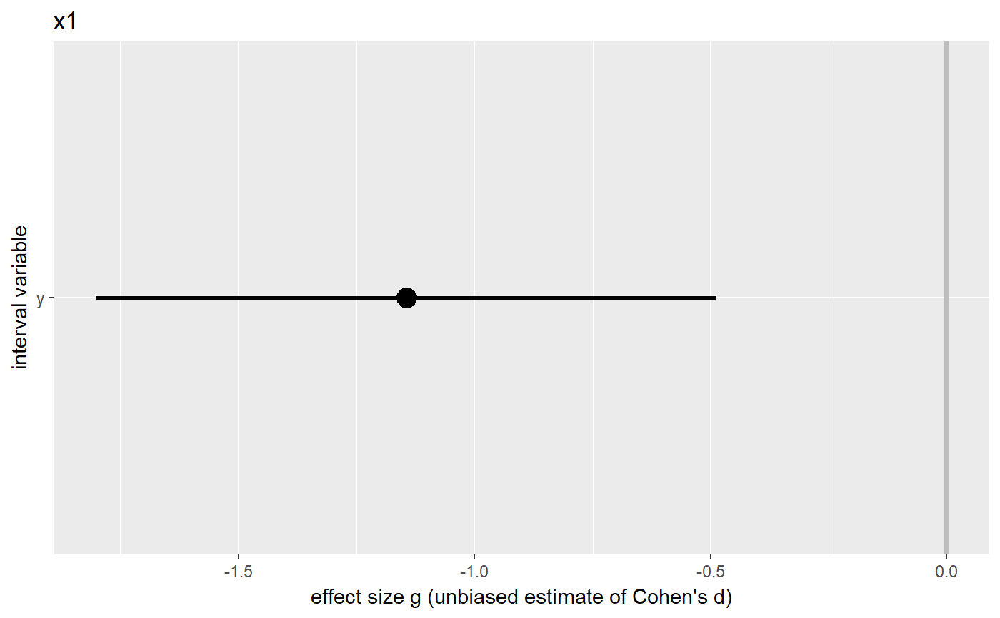
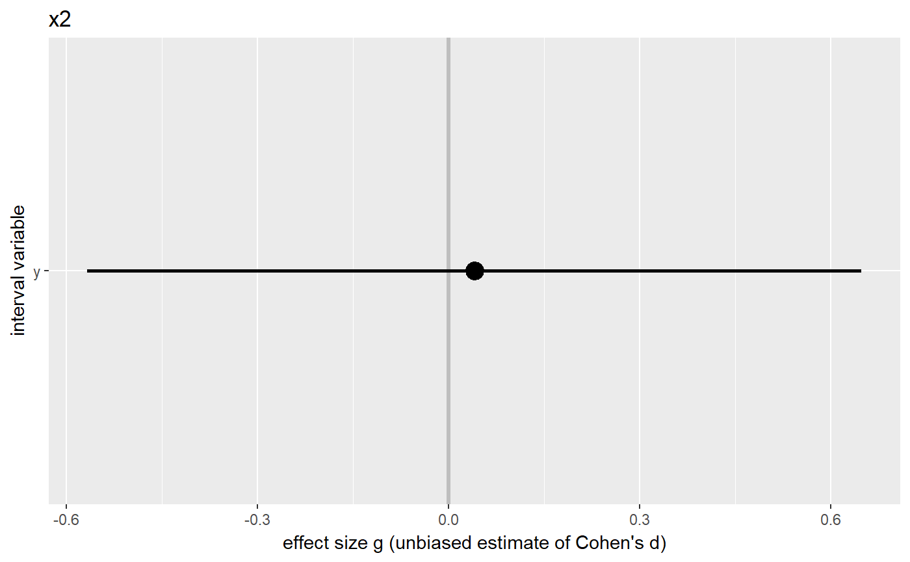

The meanDiff.multi function compares many means for many groups. It presents the results in a dataframe summarizing all relevant information, and produces plot showing the confidence intervals for the effect sizes for each predictor (i.e. dichotomous variable). Like meanDiff, it computes Cohen's d, the unbiased estimate of Cohen's d (Hedges' g), and performs a t-test. It also shows the achieved power, and, more usefully, the power to detect small, medium, and large effects.
meanDiff.multi(dat, y, x=NULL, var.equal = "yes", conf.level = .95, digits = 2, orientation = "vertical", zeroLineColor = "grey", zeroLineSize = 1.2, envir = parent.frame())
| dat | The dataframe containing the variables involved in the mean tests. |
|---|---|
| y | Character vector containing the list of interval variables to include in the tests. |
| x | Character vector containing the list of the dichotomous variables to include in the tests. If x is empty, paired samples t-tests will be conducted. |
| var.equal | String; only relevant if x & y are independent; can be "test" (default; test whether x & y have different variances), "no" (assume x & y have different variances; see the Warning below!), or "yes" (assume x & y have the same variance) |
| conf.level | Confidence of confidence intervals you want. |
| digits | With what precision you want the results to print. |
| orientation | Whether to plot the effect size confidence intervals vertically (like a forest plot, the default) or horizontally. |
| zeroLineColor | Color of the horizontal line at an effect size of 0 (set to 'white' to not display the line; also adjust the size to 0 then). |
| zeroLineSize | Size of the horizontal line at an effect size of 0 (set to 0 to not display the line; also adjust the color to 'white' then). |
| envir | The environment where to search for the variables (useful when calling meanDiff from a function where the vectors are defined in that functions environment). |
This function uses the meanDiff function, which uses the formulae from Borenstein, Hedges, Higgins & Rothstein (2009) (pages 25-32).
An object is returned with the following elements:
Objects returned by the calls to meanDiff.
For every comparison, a plot with the datapoints, means, and confidence intervals in the two groups.
Dataframe with the most important results from each comparison.
For every dichotomous (x) variable, a plot with the confidence interval for the effect size of each dependent (y) variable.
The arguments with which the function was called.
Borenstein, M., Hedges, L. V., Higgins, J. P., & Rothstein, H. R. (2011). Introduction to meta-analysis. John Wiley & Sons.
Note that when different variances are assumed for the t-test (i.e. the null-hypothesis test), the values of Cohen's d are still based on the assumption that the variance is equal. In this case, the confidence interval might, for example, not contain zero even though the NHST has a non-significant p-value (the reverse can probably happen, too).
### Create simple dataset dat <- data.frame(x1 = factor(rep(c(0,1), 20)), x2 = factor(c(rep(0, 20), rep(1, 20))), y=rep(c(4,5), 20) + rnorm(40)); ### Compute mean difference and show it meanDiff.multi(dat, x=c('x1', 'x2'), y='y', var.equal="yes");#> x y group1 group2 mean1 mean2 sd1 sd2 n1 n2 g #> 1 x1 y 0 1 4.165366 5.333858 1.0727455 0.923463 20 20 -1.14425700 #> 2 x2 y 0 1 4.773845 4.725378 0.9775939 1.328630 20 20 0.04072705 #> g.ci.lo g.ci.hi pwr.g pwr.small pwr.medium pwr.large t #> 1 -1.8014517 -0.4870623 0.94918784 0.09456733 0.337939 0.6934042 -3.6918055 #> 2 -0.5668197 0.6482738 0.05188229 0.09456733 0.337939 0.6934042 0.1314009 #> df p #> 1 38 0.0006963771 #> 2 38 0.8961514499 #> $x1#> #> $x2#>